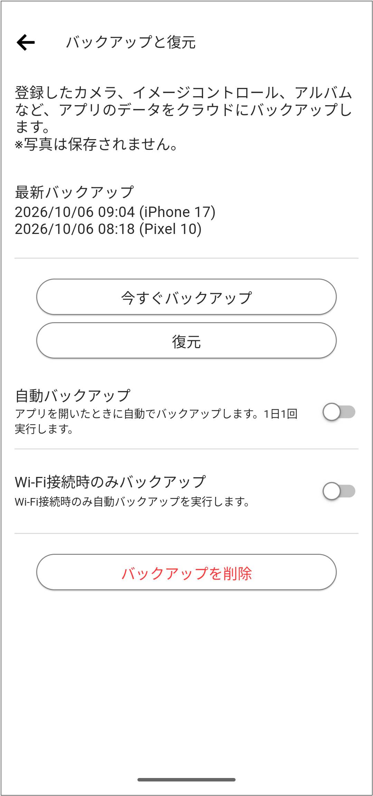

科技產品 T1
Anthropic 開放 Claude Duet 候補研究預覽，讓代理在背景整理及執行工作
發佈時間
Anthropic／Claude Duet
Claude Duet把對話轉為持續的工作代理，可整理已連結應用的重點、處理交辦任務，並在需要使用者決定時通知。
- 以獨立iOS、Android及網頁應用提供研究預覽，採候補而非所有訂戶立即可用。
- 代理有自己的雲端虛擬機與瀏覽器，不要求使用者電腦持續開機；背景檢查也計入原方案額度。
- 送出訊息、付款、簽署或刪除前需使用者確認；既有連結應用可中止授權。
完整報告收合報告
事件背景與影響
背景執行能減少反覆開啟工具的負擔，也使授權範圍、通知品質與額度消耗成為產品價值的一部分。
事件與發佈依據
Claude官方10/21公告開放research preview候補，先從美國Pro與Max訂戶開始。
收錄紀錄
Claude與Duet組合查10/08–10/21十四份日報無命中，同窗產品表未見此獨立應用預覽。
尚待確認
仍是早期研究預覽，可能誤讀訊息或判斷錯誤優先度；美國候補資格不代表台灣已開放。安全機制為原廠描述，不是本報滲透測試結果，也不保證每項工作都成功。
相關實體與概念
Claude Duet、Anthropic、背景代理、雲端虛擬機、連接器、權限、使用額度
科技產品 T2
官方架構硬體示意，非實際部署現場或安全測試結果。 NVIDIA 官方新聞稿
NVIDIA 發布 OpenShell 參照架構，把 AI 代理治理延伸至獨立硬體監測
發佈時間
NVIDIA／OpenShell Reference Architecture、Sentry
新架構以Vera Rubin執行模型、Vera CPU運行代理，並利用BlueField-4與Sentry在代理之外監測行為及執行政策。
- OpenShell提供執行環境隔離與治理介面，Sentry在獨立硬體信任範圍增加監測及執行能力。
- 原廠列出企業Linux、容器及Windows等整合方向，並延伸至Spark與DGX等邊緣設備。
- 參照架構已提供，但合作夥伴產品及各項整合的完成時間並不相同。
完整報告收合報告
事件背景與影響
讓高權限代理的安全邊界不只依賴模型自律，而是由外部系統檢查權限與活動；成效仍取決於政策、整合與部署方式。
事件與發佈依據
NVIDIA10/21新聞稿與Availability段確認參照架構現已提供；不是把既有OpenShell執行環境重新稱為首次出現。
收錄紀錄
NVIDIA與OpenShell及參照架構組合查十四份日報無命中；核對同窗表未見此次全堆疊架構發布。
尚待確認
原廠吞吐量與隔離速度不是本報實測；參照設計不等於所有企業已部署，也不能證明所有提示注入或越權情境皆可被阻止。
相關實體與概念
NVIDIA、OpenShell、Vera Rubin、Vera CPU、BlueField-4、Sentry、代理治理
科技產品 T3
Xbox 開放無 Game Pass 訂閱者測試購買雲端遊戲時數
發佈時間
Microsoft Xbox／Cloud Playtime
沒有Game Pass的合格Xbox Insider可購買雲端遊玩時數，以無廣告方式串流支援遊戲，官方預計十一月擴大推出。
- 預覽入門價格為10小時US$3.99、25小時US$7.99、50小時US$11.99。
- 未用完的時數保留至用完，時數包提供無廣告體驗。
- 仍須持有合格遊戲或使用支援的免費遊戲，並符合市場、帳號、裝置與preview ring條件。
完整報告收合報告
事件背景與影響
把固定月訂閱拆成使用量付費，但雲端運算費與遊戲授權是兩筆不同成本，不能把購買時數視為取得整個遊戲庫。
事件與發佈依據
Xbox Wire metadata首發10/21 18:00:03Z；公告當天起對合格Insider開啟計時付費預覽。
收錄紀錄
Xbox與playtime、時數、計時組合查十四份日報無命中，同窗產品表未見此次無訂閱計時預覽。
尚待確認
這是預覽價格與資格，不保證十一月所有市場條件相同。官方稱較短等候與高品質串流，實際體驗仍受網路及服務容量影響；未實測台灣可用性。
相關實體與概念
Xbox、Cloud Gaming、Game Pass、Insider、計時付費、遊戲授權
科技產品 T4

官方日文備份介面示範；內部樣本日期不代表功能公開日期。 Ricoh Imaging 官方支援頁
Ricoh 推出 GR WORLD 2.0，加入設定雲端備份及 GR IV 影像控制分享
發佈時間
Ricoh Imaging／GR WORLD 2.0.0、GR IV系列韌體
GR WORLD新增GR ID帳號與應用資料備份，GR IV系列可共享影像控制設定並自訂結束畫面，相機與手機的設定流程更容易延續。
- 可備份相機註冊、影像控制、相簿資訊、GR Log及App設定，最多支援五台智慧裝置；照片不在備份範圍。
- GR IV系列可透過連結或QR碼分享影像控制；結束畫面功能須搭配相應新版韌體。
- 30周年特別畫面選取期限為日本時間12/31，設定並綁定GR ID後可繼續使用。
完整報告收合報告
事件背景與影響
換機或跨裝置管理可少做重複設定，也能分享成像偏好；但它不是照片雲端備份服務，資料保護範圍必須分清。
事件與發佈依據
官方App頁2026.10.21版本2.0.0段及GR IV韌體1.20發布段；不使用媒體10/22修改時間。
收錄紀錄
GR WORLD與2.0、雲端及Ricoh更新組合查十四份日報無命中，同窗表未見此次功能更新。
尚待確認
GR III與GR IV系列支援功能不相同，不可把GR IV限定功能外推全系列。官方示範畫面的樣本日期早於發布，並不代表當天即公開；本文未測試所有手機與相機組合。
相關實體與概念
Ricoh、GR WORLD、GR ID、GR IV、韌體、設定備份、影像控制
全球焦點 1
PHP 發布兩項重大漏洞的緊急修補，網站營運者展開應變
發佈時間
PHP團隊發布8.5.12、8.4.27、8.3.36及8.2.35，修正可能導致未經驗證遠端執行程式碼的兩項漏洞。
- 漏洞編號為CVE-2026-109618與CVE-2026-109619，涉及請求清理與殘留內部狀態。
- 官方要求所有處理網頁請求的PHP環境檢查更新，並表示部分緩解不能取代修補。
- Cloudflare表示已部署WAF防護並觀察到攻擊流量；防火牆防護不是已修好來源伺服器。
完整報告收合報告
事件背景與影響
PHP是大量網站的基礎元件，應用程式本身更新不一定替換底層執行環境；修補責任可能分散在網站、主機商與套件供應商。
事件與發佈依據
php.net10/21正式發布修補及安全公告；10/20預告只是背景，本篇採實際可用更新與當日防護進展。
收錄紀錄
PHP與漏洞、修補查十四份日報無命中；不把同一天多家媒體報導重複計數。
尚待確認
各Linux與主機商套件可能以回補方式修正，不能只靠上游版本字串判斷。7.4、8.0、8.1另有最小原始碼回補，不代表恢復一般官方維護；早期「尚無修補」文章已落後。
相關實體與概念
PHP、PHP2Shell、遠端執行、網站維運、WAF、供應鏈
全球焦點 2
克里姆林宮稱普丁原則同意十一月恢復俄美烏三方談判
發佈時間
俄方顧問烏沙科夫表示，普丁原則同意在十一月十日之後與美國及烏克蘭恢復談判，議題涉及戰後安全安排。
- 俄方說法出自普丁與美國特使威特科夫在聖彼得堡會面之後。
- 十一月十日之後是俄方提出的時間方向，不是已公布的確切會議日期。
- 恢復談判本身未形成已簽署的停火或和平協議。
完整報告收合報告
事件背景與影響
談判管道可能重啟，但意向、正式排程與停火是不同階段，不能由會面訊號直接推論戰爭接近結束。
事件與發佈依據
AP10/21 07:54:34Z原稿，俄方官員在與美國特使會面後提出新的談判意向。
收錄紀錄
三方談判、Witkoff與威特科夫查十四份日報未見本次原則同意；不是重刊先前戰場或情報分享消息。
尚待確認
原則同意以俄方官員說法為準，三方最終議程與參與層級未完全敲定。轉載頁metadata發布／修改欄顛倒，顯示時間採AP原稿而非錯置欄位。
相關實體與概念
俄羅斯、烏克蘭、美國、Putin、Witkoff、三方談判、安全安排
全球焦點 3
美國命令部分駐沙烏地人員及眷屬撤離，因應青年運動攻擊風險
發佈時間
美國國務院命令駐利雅德使館及相關領事機構的非必要人員與政府僱員眷屬離開沙烏地阿拉伯。
- 美國以青年運動攻擊民用機場及關鍵設施、造成傷亡與交通中斷作為警示背景。
- 命令針對特定人員與眷屬，不能等同全民強制撤離。
- 既有使館損壞與低人力運作是背景，不當作週三才發生。
完整報告收合報告
事件背景與影響
外交人員縮編是風險評估轉變的具體措施，也可能影響領事服務與旅行安排，但不代表所有外交據點都已關閉。
事件與發佈依據
AP10/21 20:31:41Z報導國務院週三撤離命令，非較早的使館受損消息。
收錄紀錄
駐沙國撤離組合查十四份日報無命中；10/21英國協助沙國防空為不同政府與行動。
尚待確認
撤離規模、個別航班與後續領事服務以最新官方安排為準；本篇不由撤離命令推定即將發生特定軍事行動。
相關實體與概念
美國國務院、沙烏地阿拉伯、利雅德、青年運動、外交安全
全球焦點 4
續報｜非洲 CDC 召集伊波拉危機會議，跨國防疫協調升級
發佈時間
非洲CDC邀請衛生部長參加十月二十八日特別視訊會議，在奈及利亞通報病例後加強跨國因應。
- 奈及利亞當局正在追蹤44名接觸者。
- 病例曾旅經烏干達，但烏干達否認感染源在當地。
- 會議已發出邀請，尚不是已開完或已達成新防疫協議。
完整報告收合報告
事件背景與影響
跨境疫情需要共同調度檢驗、追蹤與醫療資源；旅遊路徑與感染地不能混為一談，避免錯誤歸因妨礙合作。
事件與發佈依據
AP10/21 11:04:27Z報導週三邀請各國衛生部長；奈及利亞週二首例作背景，不冒稱今天才確認。
收錄紀錄
2026-10-19已收錄剛果疫情擴及第八省；今天新增非洲CDC召集10/28區域危機會議，回應疫情跨區域擴散。
尚待確認
患者身分、入境經過及感染來源在不同官方敘述間有差異，尚不能定論感染國。44人是追蹤名單，不是44名確診；本文不是個人醫療建議。
相關實體與概念
Africa CDC、伊波拉、奈及利亞、烏干達、剛果、接觸者追蹤
全球焦點 5
喬治亞憲法法院開始審理禁止五個主要反對黨的訴訟
發佈時間
喬治亞憲法法院在巴統開庭，審查執政方要求禁止五個主要反對黨的訴訟，法院外有民眾抗議。
- 七名法官組成的審理庭開始處理案件，聽證預計持續至週五。
- 起訴方主張相關政黨活動違憲；反對黨否認並批評訴訟是排除競爭者。
- 開庭不等於法院已作成禁黨裁決。
完整報告收合報告
事件背景與影響
案件可能改變政治競爭的參與者與選舉環境；法院是否接受訴求，與執政方如何描述反對黨必須分開。
事件與發佈依據
AP10/21 17:29:04Z報導週三實際開庭，不把先前預告開庭日期當裁決。
收錄紀錄
喬治亞與禁黨、政黨及Georgia查十四份日報，未見本次實體開庭。
尚待確認
違憲是訴方主張而非已確認事實；最終裁判、後續選舉影響與救濟程序仍未確定。
相關實體與概念
喬治亞、Georgian Dream、憲法法院、巴統、政治多元、政黨禁令
全球焦點 6
台灣公平會禁止 Grab 收購 foodpanda，認定與 Uber 的股權連結難消競爭疑慮
發佈時間
公平會禁止Grab與富胖達股份有限公司結合，認為Uber持有Grab約13.1%股份等關係，可能削弱結合後兩大外送平台的競爭。
- 公平會認為台灣外送市場高度集中、網路效應強且進入障礙高。
- Grab提出稀釋持股、限制董事兼任及敏感資訊交流等承諾，主管機關認為不足以消除疑慮。
- 決議依公平交易法第13條第1項禁止結合，並非宣布foodpanda停止營運。
完整報告收合報告
事件背景與影響
審查不只看買賣雙方有沒有直接競爭，也看少數持股、過往董事及合作關係是否改變競爭誘因。
事件與發佈依據
公平會10/21第1825次委員會議決議及正式新聞稿，不使用三月交易宣布當今天事件。
收錄紀錄
Grab、foodpanda與富胖達事件查十四份日報未見本次禁止結合決議。
尚待確認
禁止本案不等於法律永久禁止任何新申報；後續策略、是否提出不同結構或救濟，不能由本次決議直接推定。
相關實體與概念
公平會、Grab、foodpanda、Uber、少數持股、平台競爭、結合管制
全球焦點 7
北韓宣布十月底前恢復沿邊界對南韓廣播，心理戰降溫成果受挑戰
發佈時間
金與正表示，北韓將在十月底前重新啟用沿邊界對南韓的宣傳擴音器，使原本降溫的心理戰再度升高。
- 聲明由北韓官媒發布，指向整條邊界的擴音器部署。
- 北韓持續加固邊境，南北韓對先前地雷事件責任說法不同。
- 截點尚不能把宣布部署寫成全線廣播已恢復。
完整報告收合報告
事件背景與影響
廣播與邊界工事可增加前線摩擦及居民壓力；公布時程與實際啟用仍是兩個不同階段。
事件與發佈依據
Reuters10/21 02:34美東時間報導金與正週三聲明，新增沿整條邊界及十月底前的具體部署時程。
收錄紀錄
十四份日報僅命中10/15潛射巡弋飛彈，非廣播事件；未曾收錄本次安排。週一威脅是背景，不誤稱首次提及心理戰。
尚待確認
工事、地雷與挑釁責任應保留雙方說法；邊境視察日期在官媒與後續更正間有歧異，不用照片日期代替聲明日。
相關實體與概念
北韓、南韓、金與正、KCNA、心理戰、邊界工事
全球焦點 8
薩爾瓦多宣布在海地展開行動，營救被幫派扣押的四名航空技術人員
發佈時間
布格磊表示已發起軍事行動，要求海地幫派平安釋放四名薩爾瓦多人員，並警告若未釋放將加強回應。
- 四人週日遭伏擊後失蹤，所乘裝甲車起火。
- 布格磊稱他們是航空技術人員，主要支援醫療後送等工作。
- 他未公布詳細作戰計畫，也未宣布已成功救出人質。
完整報告收合報告
事件背景與影響
事件凸顯國際支援海地安全任務的風險，也可能讓救援與更大規模作戰的界線受到考驗。
事件與發佈依據
Reuters10/21 16:11美東時間報導布格磊週三宣布新救援行動；週日遭伏擊與失蹤為背景。
收錄紀錄
海地與人質、薩爾瓦多、Bukele查十四份日報未見本次行動宣布。
尚待確認
人員狀況、扣押者身分與行動進度未完全公開；總統宣告不等同獨立確認戰果或人質安全。
相關實體與概念
薩爾瓦多、海地、Nayib Bukele、Gang Suppression Force、人質、醫療後送
全球焦點 9
義大利卡車抗議擴散，零售商警告生鮮受阻、兩座機場缺航空燃料
發佈時間
卡車司機抗議燃料與生活成本，使食品配送受阻，零售商表示大量易腐食品困在車上與倉庫；卡拉布里亞兩座機場亦因收不到燃料而受影響。
- 抗議自南部擴散，拿坡里附近A1公路出現長車龍，拉文納亦有卡車與農民集會。
- Conad體系零售商警告蔬果、牛奶與肉品滯留，增加損耗。
- 政府表示可考慮柴油價格上限，尚非已全面實施。
完整報告收合報告
事件背景與影響
能源成本透過物流放大至民生供應，限制不只反映在價格，也可能變成買不到商品及交通服務中斷。
事件與發佈依據
Reuters10/21 09:52美東時間報導週三零售商警告與供應中斷進展，不以週二超市照片代替當日依據。
收錄紀錄
義大利與卡車、運輸、短缺查十四份日報無同事件；10/21米蘭部署軍人屬另一場維安事件。
尚待確認
短缺是受影響地區及業者通報，不等同全國所有商店缺貨；政策考慮與已生效措施分開，不推估恢復配送日期。
相關實體與概念
義大利、卡車運輸、柴油、Conad、食品供應鏈、機場燃料
全球焦點 10
埃及正式反對利比亞國會批准與土耳其的海域協議
發佈時間
埃及外交部表示，利比亞東部國會批准2019年與土耳其的海域協議，對埃及不產生法律效果，並重申反對。
- 協議原由利比亞西部政府於2019年與土耳其簽署，東部國會先前多年未批准。
- 埃及、希臘與賽普勒斯長期反對，認為影響自身海域權利。
- 埃及與希臘2020年另有重疊海域安排，土耳其亦持反對立場。
完整報告收合報告
事件背景與影響
海域劃界牽動東地中海能源探勘與多國主權主張；國內批准不會自動消除第三國爭議。
事件與發佈依據
Reuters報導埃及外交部10/21正式回應週二利比亞批准；本篇選新的外交反應，不把2019年簽約當今天事件。
收錄紀錄
埃及與海界、海域及利比亞協議查十四份日報未見本次正式反對。
尚待確認
「無效」是埃及立場，不是本報代國際法院裁決；各方主張與最終法律效力仍有爭議，也沒有因此在今天畫出新的共同承認邊界。
相關實體與概念
埃及、利比亞、土耳其、希臘、東地中海、海域劃界、能源探勘
研究備註
時間、來源與後續追蹤
研究截點 2026-10-22 07:57:13（Asia/Taipei）
研究時間與範圍
研究截點：2026-10-22 07:57:13（Asia/Taipei）。全球新聞：2026-10-21 07:57:13 至 2026-10-22 07:57:13（Asia/Taipei）。科技產品：2026-10-08 07:57:13 至 2026-10-22 07:57:13（Asia/Taipei）。